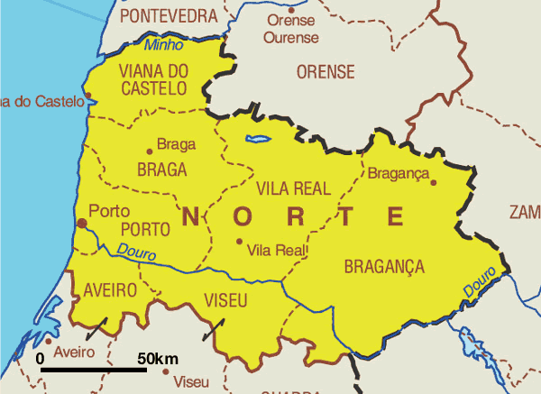

A geografia de Portugal é diversificada e inclui uma variedade de características naturais, desde a costa atlântica até montanhas, planícies e rios. Portugal está localizado na Península Ibérica, na parte ocidental da Europa, e faz fronteira com a Espanha ao leste e ao norte, enquanto o oceano Atlântico banha sua costa ocidental e sul.
Costa Atlântica:
- Portugal tem uma extensa costa atlântica, que se estende por cerca de 1.794 quilômetros. Esta costa é conhecida pelas suas praias, falésias e paisagens costeiras impressionantes.

Planície Costeira:
- A região litoral é geralmente plana, especialmente no sul, onde se encontra o Alentejo. É uma área fértil e produtiva, com agricultura e vinicultura.
Região Norte:
- O norte de Portugal é caracterizado por montanhas, incluindo a Serra da Estrela, a montanha mais alta de Portugal continental. A região é verde e exuberante, com vales férteis.

Região Centro:
- Esta área inclui a cidade de Coimbra e a famosa região vinícola do Dão. É uma região montanhosa com muitos rios e florestas.
Região de Lisboa e Vale do Tejo:
- A capital, Lisboa, está localizada nesta região, que também inclui cidades como Sintra e Cascais. É a área mais densamente povoada de Portugal e concentra grande parte da atividade econômica do país.

Alentejo:
- Localizado no sul, o Alentejo é uma vasta planície agrícola e uma das regiões mais quentes de Portugal. É conhecido por suas planícies onduladas e campos de trigo, vinhas e oliveiras.
Algarve:
- A região do Algarve é famosa por suas praias espetaculares e clima quente. É um importante destino turístico, com uma paisagem costeira dramática e vilas encantadoras.
Madeira e Açores:
- Portugal inclui duas regiões autônomas no Atlântico: a Madeira e os Açores. Ambas são conhecidas por sua beleza natural, com vulcões, montanhas, florestas exuberantes e uma rica diversidade de flora e fauna.